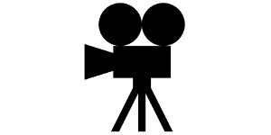

Loads an .xkt IFC model, then lets you walk through it with gravity, collisions and steps, go through
doors and fly. WalkModePlugin comes from the @xeokit/sdk-plugins package, not from
xeokit-sdk.
Press Walk to start on the ground floor. Use the mouse to look around and the keys listed in the legend to move. Press Esc to go back to orbiting.
The plugin needs a Z-up World, so the page sets camera.worldAxis and loads the Y-up model rotated
by 90 degrees about the X axis.